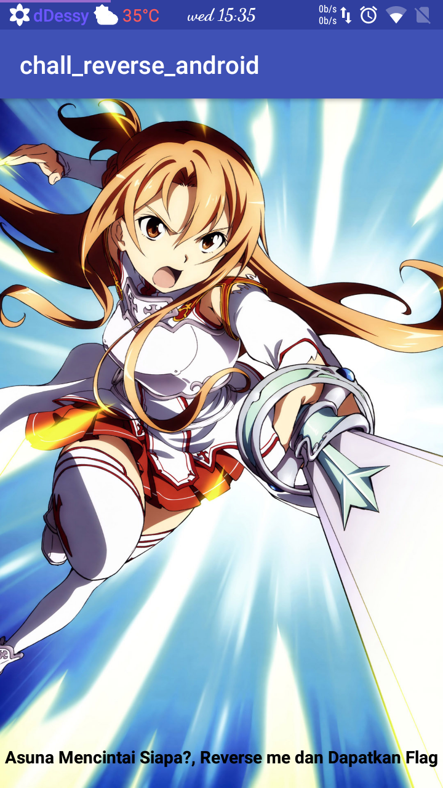
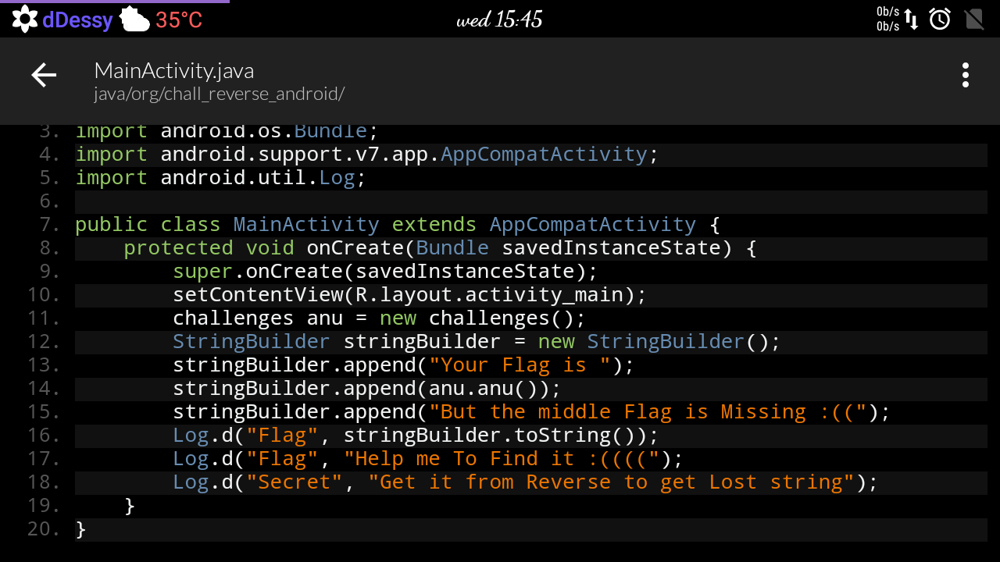
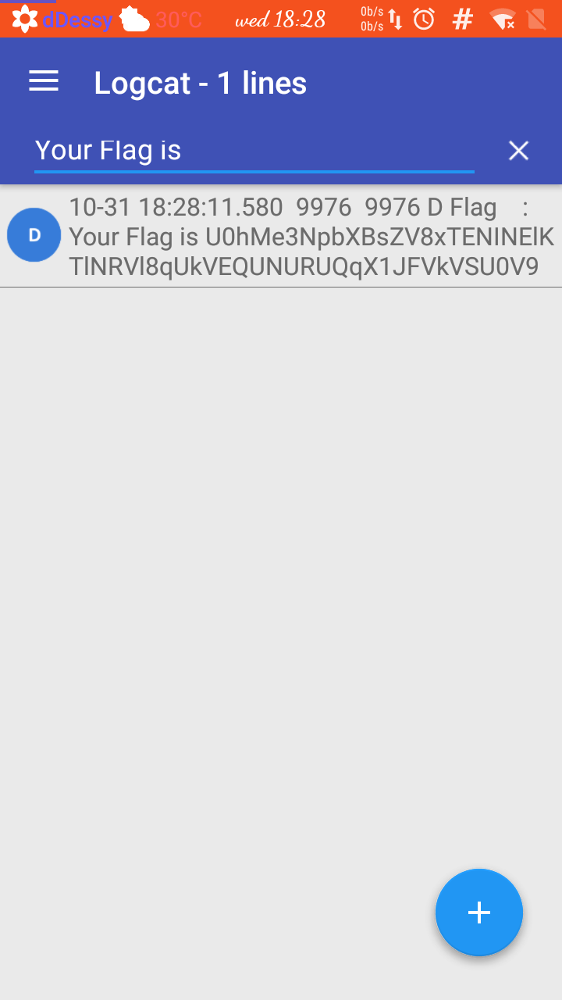
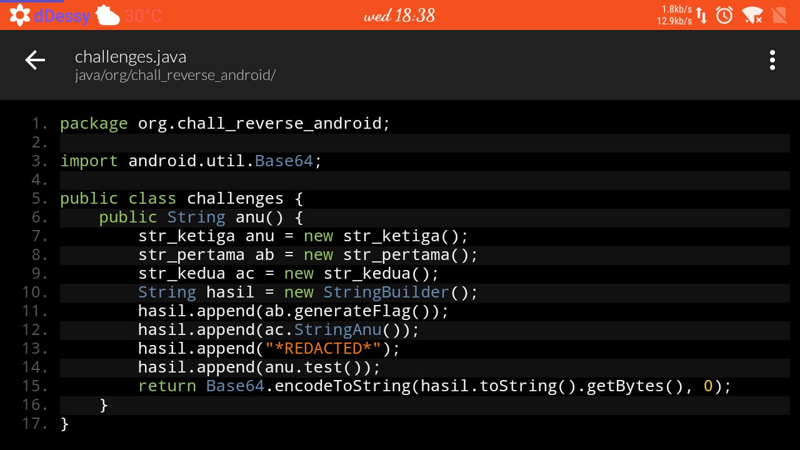
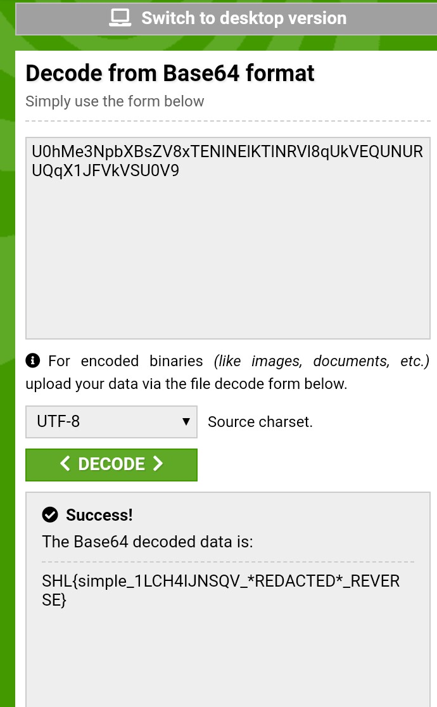
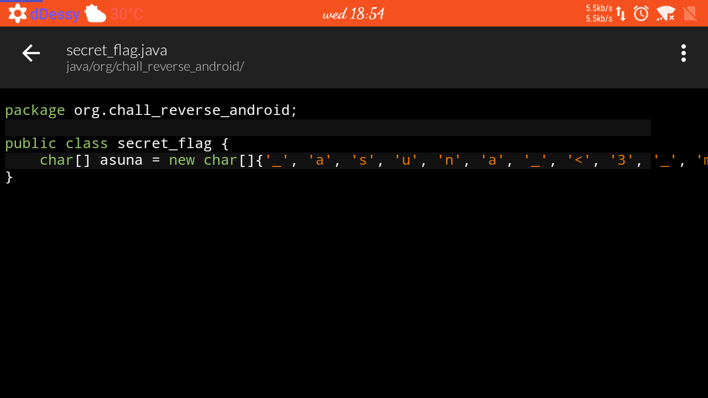
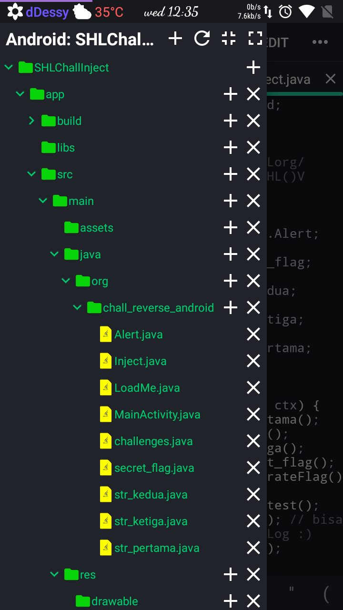
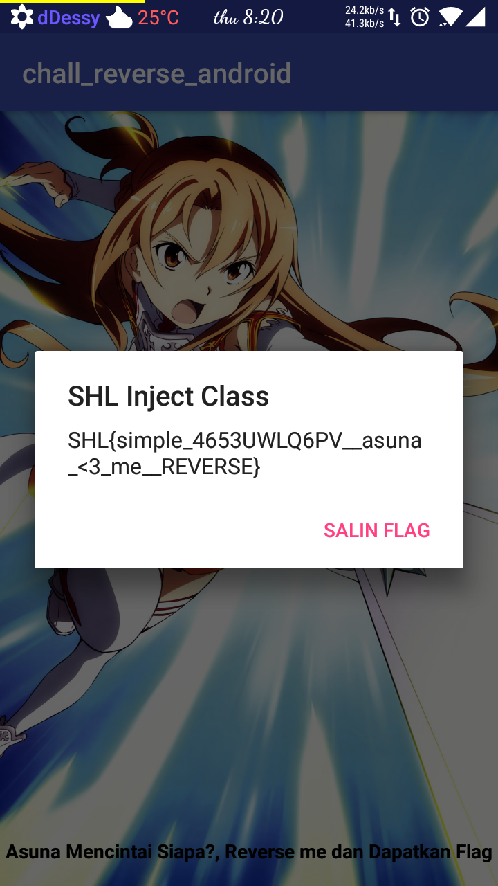
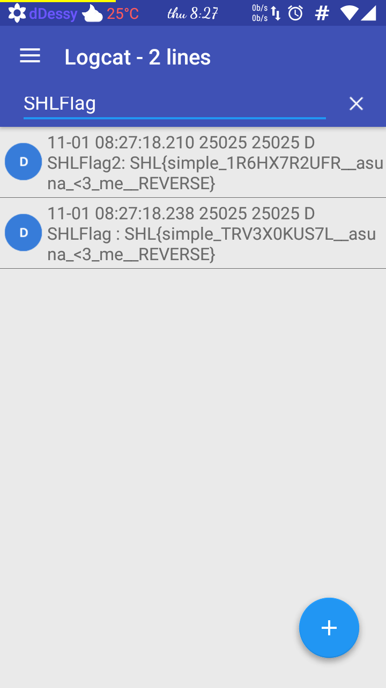
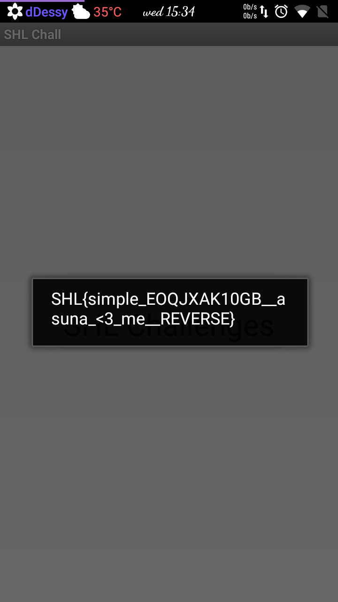

Dibuat Tanggal : 30 oktober 2018
Oleh : dessy :)
Penting!!! : disini saya hanya membagikan sedikit informasi pengetahuan dan pengalaman saat menyelesaikan challenge SHL(Android Reverse). jadi, dengan ini anda setuju bahwa yang kita pelajari bersama ini tidak digunakan untuk kejahatan atau berbagai bentuk hal yang merugikan orang lain. dengan kata lain kita belajar untuk/bagi kebaikan bersama.
challenge : asuna.apk
Didalam challenge tersebut kita akan di suguhkan dengan sebuah aplikasi android yang didalamnya terdapat String flag yang tersembunyi.
okey, langsung kita install dan buka aplikasinya.

nah, aplikasinya hanya mempunyai tampilan seperti ini dan tidak ada menu lain. jadi, diceritakan pada aplikasi ini terdapat karakter utama yaitu Asuna yang sedang kehilangan ingatan. tugas kita di sini adalah mencari dimana flagnya?
okey, seperti biasa. kita decompile apknya untuk melihat source codenya. ada banyak tools decompiler, kita bisa menggunakan JaDX untuk windows atau Show Java untuk android.

nah, source javanya sudah kita ketahui. jadi sebenarnya flagnya sudah di generate ke bentuk Log android.
hmm, kita coba lihat di Log aplikasi ini dengan pencarian string "Your Flag is" :)
disini saya menggunakan Logcat Extreme. untuk melihat log android. dan saya menggunakan fitur search tersebut agar lebih spesifik.

nah, kita melihat aplikasi tersebut menggenerate flagnya. tapi kok flagnya aneh :)
mari kita mencari darimana flag tersebut di generate.
jika kita melihat pada source MainActivity, dapat kita ketahui bahwa flag tersebut didapat dari class "challenges" pada method "anu()". okey kita lihat soure pada class challenges :)

hmm, seperti yang kita lihat. hasil generate Stringnya dirubah ke Base64 encode.
langsung kita coba decode hasil string dari Logcat tadi :)
berikut adalah hasil decode dari tools Base64 decode online.

okey, seperti inikah flag yang di maksud secara keseluruhan? ternyata tidak :) kata masnya string *REDACTED* harus di ganti dengan flag tersembunyi.
mari, kita coba lihat lagi semua source java di aplikasi ini.

maaf, kepotong. karna gak ada fitur word wrapnya :v
nah, kita temukan class secret_flag yang berisi seperti diatas.
seperti yang kita tau class tersebut berisi char array. apakah ini flagnya? :)
sebenarnya kita dapat menggenerate sendiri dengan menggabungkan char array tersebut dari arrays 0 - baris terakhir.
jadi, secara keseluruhan flagnya setelah String *REDACTED* di replace dengan flag asli adalah.
mungkin misi dari challenge ini sampai disini ya teman2 :) //maaf jika saya salah.
saya mohon maaf, jika dalam menyampaikan dan menjelaskan banyak salah. karna memang saya belum menguasain betul secara keseluruhannya :)
Apabila belum capek membacanya. mari kita pelajari cara lain :)
lanjut mas/mbak?
okey, misi dalam challenge ini kan sebenernya mencari suatu String flag yang tersembunyi. nah, kebetulan flag tersebut sudah ada dalam source apk ini sendiri dan kata masnya juga flagnya di generate pada client side. jadi, tidak mengambil suatu String lain dari server online.
langsung saja, cara lain yang sudah saya terapkan yaitu mengInject suatu class baru untuk menggenerate flag secara keseluruhan dari source apk ini juga.
berikut android java code yang dapat kita gunakan.

oh iya. karna Asuna sudah di pack ke dalam bentuk Apk, maka untuk mengInjectnya bisa dengan code smali(java dalvik). untuk membuatnya kita buat juga aplikasi serupa dengan Aplikasi AndroidNIDE untuk build apk dari source tersebut.
pada source ini "str_pertama", "str_kedua", "str_ketiga", "secret_flag" dan "challenges" hanyalah beberapa code palsu(fake code).
karena yang akan kita coba sekarang adalah mengInject code ke Apk Asuna untuk mendapatkan flag yang akan di tampilkan ke dalam Alert Dialog. maka kita gunakan "Alert.java" & "Inject.java" atau "Alert.java" & "LoadMe.java"
File Alert.java
File Inject.java
File LoadMe.java
jadi, dari source ini di build apk. lalu kita bongkar apk tersebut untuk mendapat file smali(java dalvik). untuk penguna android kita dapat menggunakan Apk Editor.
untuk full sourcenya bisa Teman2 lihat disini
okey, sampai sini kita sudah membuat dan mempunyai file smali yang akan di Inject ke apk Asuna.
untuk mengInjectnya kita gunakan juga Apk Editor :)
nah, untuk menjalankan class yang sudah kita buat dan injectkan tadi kita perlu memanggilnya dari MainActivity aplikasi Asuna.
kita hanya perlu memanggil class dengan membawa parameter Context :)
jadi codenya bisa seperti ini :
invoke-static {p0}, Lorg/chall_reverse_android/Inject;->SHL(Landroid/content/Context;)V //Inject.SHL(getApplicationContext());
invoke-static {p0}, Lorg/chall_reverse_android/LoadMe;->getKey(Landroid/content/Context;)V //LoadMe.getKey(getApplicationContext());
fiuh, capek :) okey, sudah kita inject apk Asuna. selanjutnya kita build dan install apknya.
berikut tampilan setelah di inject denga class kita :)

oh iya, di Injector tadi juga menggenerate flag di Log android loh :)
mari kita lihat dengan aplikasi Logcat Extreme dengan keyword "SHLFlag" atau "SHLFlag2" sama dengan yang kita tentukan di Source injector tadi.

yeeyy, kita dapat juga flagnya di Log :)
masih semangat mas/mbak? :)
okey, daripada kelamaan kita pelajari satu cara lagi.
seperti yang kita tau, dengan perkembangan mobilitas masyarakat sekarang yang cukup pesat. terkadang kita banyak menemukan suatu aplikasi yang mempunyai proteksi(keamanan) yang sangat luarbiasa kuat.
beberapa contoh proteksi tersebut adalah anti decompile, anti tampering, anti edit, source obfuscation. intinya beberapa proteksi tersebut agar dapat menghambat atau mempersulit reverser.
nah, jika tadi kita menggunakan teknik mengInject app Asuna. maka kita coba balik tekniknya dangan kata lain, kita membuat aplikasi yang akan di inject dengan class dari aplikasi Asuna. yang akan meload classnya secara otomatis.
okey, langsung saja berikut source dari sebuah app yang akan kita gunakan untuk meload class dari app Asuna.
okey, bisa kita lihat alur kerja dari aplikasi yang kita buat ini. jadi, aplikasi kita ini akan mengambil source yang kita butuhkan dari apk Asuna yang kita taruh di internal Storage dengan bantuan DexClassLoader. setelah itu class tersebut akan dijalankan di aplikasi kita ini dengan tujuan seperti misi kita pada challenge ini yaitu menggenerate flag dari return String class tersebut.
kita anggap saja app Asuna mempunyai proteksi anti Inject atau anti Edit.
langsung saja kita lihat hasilnya setelah selesai membuild dan menginstall aplikaisi tadi.

yeey, kita juga bisa dapat flagnya dari aplikasi yang kita buat tadi :)
okey gan/sis/om/tante :) sepertinya sampai disini dulu kita belajar bersamanya.
mohon maaf jika yang sedikit saya sampaikan bersama ini banyak salah dalam kata atau pengetahuan saya.
akhir kata dari saya
Referensi